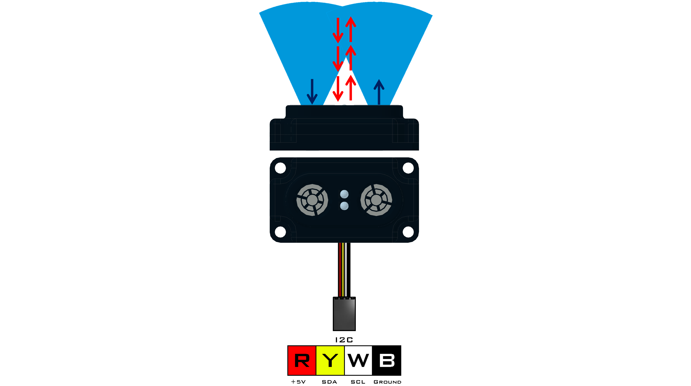

Range Sensor (45-2008)
The Range Sensor combines ultrasonic and optical measuring elements to obtain a reading between 1cm and 255cm. The ultrasonic accurately measures distance to a target up to 255cm away, but it losses accuracy if the object is closer than 5cm. This is where the optical sensor comes into play as it can measure from 1cm out to about 7cm. The target shape and surface material will influence the detectable range.
Sensor Type : Four Wire I2C
Default I2C Address : 0x28
Sensor ID Code : 0x55
Dimensions : 56mm x 32mm x 17mm
Mounting Holes : 48mm x 24mm
Power : 5V DC, 22mA Max
Signal Logic Levels : Logic 0 - 0V, Logic 1 - 5V
I2C Bus Speed : 100kHz max
I2C Address Change Option : Yes (Even Number 0x10 - 0xEE)
Range Sensor Visual Programming Blocks
List of available functions:

Fusion.range(driver, addr)
Definition
This class contains the necessary drivers for the Modern Robotics Range Sensor and must be called at the beginning of the program before using any other class functions.
Parameters
driver : Main driver object so the class can call driver functions (f)
addr : Enter an I2C address in hexidecimal if different from defaultReturns
Range Sensor Object
Example
import Fusion f = Fusion.driver() r1 = Fusion.range(f) r2 = Fusion.range(f, 0x40)
ultrasonic()
Definition
The ultrasonic element works by one of the transducers emitting a sound wave and the other receiving the sound wave. This reading is accurate between 5cm and approximately 255cm. The return is linear.
Parameters
None
Returns
Distance(cm) : int (0 - 255)
Example
import Fusion f = Fusion.driver() r = Fusion.range(f) print r.ultrasonic()
optical()
Definition
The optical element works by emitting infrared light from on LED and receiving infrared light to the other LED. The optical value can detect objects within 15cm. As an object approaches the optical element the returned value will increase at an exponential rate.
Parameters
None
Returns
Proximity : int (0 - 255)
Example
import Fusion f = Fusion.driver() r = Fusion.range(f) print r.optical()
If any problems arise
Contact Modern Robotics, Inc. at support@modernroboticsinc.com with a detailed description of the steps you have taken and observations you have made.
Email Subject: Fusion Python Range Sensor